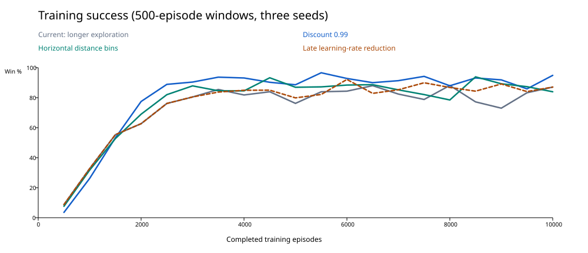
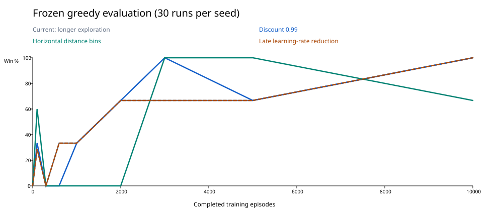

Discount 0.99 · 98765 · episode 100
Fastest checkpoint with 30/30 wins. First run: orb, 5.55s, 7 takeoffs, 0.08s longest stationary stretch.
Saved Q-table · Reopen using this variant’s frozen project.
October 19, 2026 · Three isolated changes · 90,000 new training episodes · 2,430 frozen evaluations
The current reference keeps the time penalty and longer exploration. Each experiment changes only one learning choice. The playable game and its normal save remain unchanged.
| Condition | Training wins | Last 5k wins | Final eval wins | Seconds / win | Takeoffs / win | Fully successful late checkpoints |
|---|---|---|---|---|---|---|
| Original baseline | 83.1% | 83.8% | 90/90 | 8.18 | 13.3 | 9/9 |
| Time penalty | 81.7% | 81.6% | 90/90 | 8.54 | 14.0 | 8/9 |
| Current: longer exploration | 73.5% | 82.6% | 90/90 | 6.36 | 10.3 | 7/9 |
| Discount 0.99 | 81.2% | 91.9% | 90/90 | 7.58 | 13.3 | 8/9 |
| Horizontal distance bins | 77.2% | 86.4% | 60/90 | 7.20 | 12.0 | 8/9 |
| Late learning-rate reduction | 75.7% | 86.4% | 90/90 | 6.00 | 10.0 | 7/9 |
Durations and takeoffs describe successful runs only: always read alongside wins. Late checkpoints are 3,000, 5,000 and 10,000 episodes for each seed (nine policies). Repeated evaluations from one fixed spawn are not independent tests of generalization.


Lines connect sampled checkpoints; they do not establish what happened between checkpoints. Training uses exploration. Evaluation freezes learning and sets exploration to zero. The current and lower-learning-rate aggregate evaluation curves overlap exactly; the dashed orange line shows the latter. Their per-seed successes at episode 5,000 differ, as the table below shows.
| Condition / seed | 0 | 100 | 300 | 600 | 1000 | 2000 | 3000 | 5000 | 10000 |
|---|---|---|---|---|---|---|---|---|---|
| Current: longer exploration · 12345 | 0/30 —s | 0/30 —s | 0/30 —s | 30/30 7.87s | 0/30 —s | 0/30 —s | 30/30 5.28s | 0/30 —s | 30/30 6.10s |
| Current: longer exploration · 42 | 0/30 —s | 26/30 10.83s | 0/30 —s | 0/30 —s | 0/30 —s | 30/30 8.63s | 0/30 —s | 30/30 9.35s | 30/30 6.40s |
| Current: longer exploration · 98765 | 0/30 —s | 0/30 —s | 0/30 —s | 0/30 —s | 30/30 7.77s | 30/30 5.82s | 30/30 5.70s | 30/30 5.60s | 30/30 6.57s |
| Discount 0.99 · 12345 | 0/30 —s | 0/30 —s | 0/30 —s | 0/30 —s | 0/30 —s | 30/30 7.20s | 30/30 7.67s | 30/30 6.37s | 30/30 7.08s |
| Discount 0.99 · 42 | 0/30 —s | 0/30 —s | 0/30 —s | 0/30 —s | 30/30 14.17s | 30/30 7.03s | 30/30 7.73s | 0/30 —s | 30/30 7.72s |
| Discount 0.99 · 98765 | 0/30 —s | 30/30 5.48s | 0/30 —s | 0/30 —s | 0/30 —s | 0/30 —s | 30/30 8.23s | 30/30 7.60s | 30/30 7.93s |
| Horizontal distance bins · 12345 | 0/30 —s | 27/30 9.62s | 0/30 —s | 0/30 —s | 0/30 —s | 0/30 —s | 30/30 5.93s | 30/30 6.80s | 0/30 —s |
| Horizontal distance bins · 42 | 0/30 —s | 4/30 5.50s | 0/30 —s | 0/30 —s | 0/30 —s | 0/30 —s | 30/30 7.77s | 30/30 7.97s | 30/30 6.17s |
| Horizontal distance bins · 98765 | 0/30 —s | 23/30 11.49s | 0/30 —s | 0/30 —s | 0/30 —s | 0/30 —s | 30/30 5.17s | 30/30 7.03s | 30/30 8.23s |
| Late learning-rate reduction · 12345 | 0/30 —s | 0/30 —s | 0/30 —s | 30/30 7.87s | 0/30 —s | 0/30 —s | 30/30 5.28s | 30/30 8.15s | 30/30 5.80s |
| Late learning-rate reduction · 42 | 0/30 —s | 26/30 10.83s | 0/30 —s | 0/30 —s | 0/30 —s | 30/30 8.63s | 0/30 —s | 0/30 —s | 30/30 6.07s |
| Late learning-rate reduction · 98765 | 0/30 —s | 0/30 —s | 0/30 —s | 0/30 —s | 30/30 7.77s | 30/30 5.82s | 30/30 5.70s | 30/30 8.90s | 30/30 6.13s |
Each cell shows wins out of 30 and mean successful duration. A dash means no successful runs.
The unchanged geometry probe's seven positions formerly shared key 000101|1|1|0.
The new encoding splits them into two keys: five positions still share the original key,
and two use 020101|1|1|0. The extra information helps distinguish some situations,
but does not uniquely identify the platform or route.
Exact positions and keys.
Paths join decision positions every six physics ticks; they are sampled traces, not frame-perfect animation. Black dot: end position. Gold circle: orb.
Fastest checkpoint with 30/30 wins. First run: orb, 5.55s, 7 takeoffs, 0.08s longest stationary stretch.
Saved Q-table · Reopen using this variant’s frozen project.
Most takeoffs in a failed first evaluation. First run: timeout, 20.00s, 30 takeoffs, 0.10s longest stationary stretch.
Saved Q-table · Reopen using this variant’s frozen project.
Longest stationary stretch in a failed first evaluation. First run: timeout, 20.00s, 0 takeoffs, 20.00s longest stationary stretch.
Saved Q-table · Reopen using this variant’s frozen project.
Most horizontal direction reversals in a failed first evaluation (189). First run: timeout, 20.00s, 0 takeoffs, 0.00s longest stationary stretch.
Saved Q-table · Reopen using this variant’s frozen project.
Regression after 30/30 wins at episode 3000. First run: timeout, 20.00s, 5 takeoffs, 0.00s longest stationary stretch.
Saved Q-table · Reopen using this variant’s frozen project.
Fastest checkpoint with 30/30 wins. First run: orb, 5.17s, 9 takeoffs, 0.07s longest stationary stretch.
Saved Q-table · Reopen using this variant’s frozen project.
Most takeoffs in a failed first evaluation. First run: timeout, 20.00s, 36 takeoffs, 0.03s longest stationary stretch.
Saved Q-table · Reopen using this variant’s frozen project.
Longest stationary stretch in a failed first evaluation. First run: timeout, 20.00s, 0 takeoffs, 20.00s longest stationary stretch.
Saved Q-table · Reopen using this variant’s frozen project.
Most horizontal direction reversals in a failed first evaluation (114). First run: timeout, 20.00s, 29 takeoffs, 0.00s longest stationary stretch.
Saved Q-table · Reopen using this variant’s frozen project.
Regression after 30/30 wins at episode 5000. First run: death, 4.88s, 8 takeoffs, 0.02s longest stationary stretch.
Saved Q-table · Reopen using this variant’s frozen project.
Fastest checkpoint with 30/30 wins. First run: orb, 5.28s, 10 takeoffs, 0.02s longest stationary stretch.
Saved Q-table · Reopen using this variant’s frozen project.
Most takeoffs in a failed first evaluation. First run: death, 4.68s, 8 takeoffs, 0.02s longest stationary stretch.
Saved Q-table · Reopen using this variant’s frozen project.
Godot 4.7.1, 60 Hz physics, six-tick actions, identical fixed map/spawn, seeds 12345, 42 and 98765. Each seed trains uninterrupted for 10,000 episodes, then evaluates nine saved checkpoints 30 times each. Evaluation tie-breaking uses seed + 1,000,000; training RNG and Q-values are asserted unchanged by evaluation. The diagnostic is byte-identical to earlier tests.
Best-checkpoint selection is retrospective, using these evaluations, and is not an independent performance test. No combinations or new maps were tested. The horizontal-bin and learning-schedule checkpoints require their matching frozen projects.
Reload and reproduce · Exact settings · Structured results · Best checkpoint references · Footage candidates